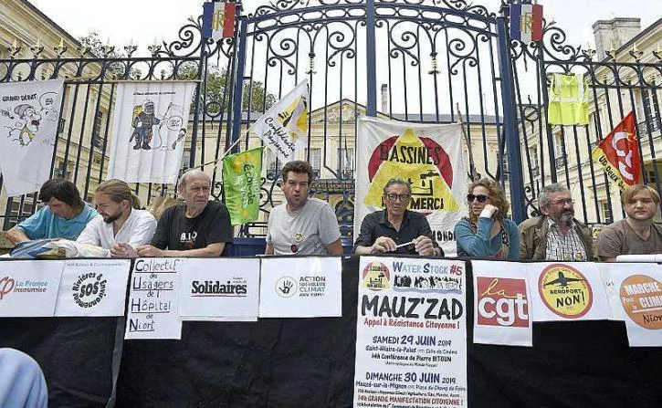

Publication sur X
Eau. Des organisations réunies contre les bassines
Date de publication sur X · 14 juin 2019
Repères éditoriaux
Nous avons rendu compte d’une initiative collective avec Bassines non merci, en faveur d’une agriculture durable et du partage de l’eau.
Texte de la publication sur X
Vingt-six organisation rassemblées pour lutter contre les bassines pour une agriculture durable avec le collectif #bassinesnonmerci #PCF79 https://t.co/Vzb3kGoCv7

Sources
PCF 79 · @79Parti sur X · AR-0005-TW-1139616540939214849
À lire aussi · Après la Semaine pour les alternatives aux pesticides, agir durablement
Publications associées
- 6 novembre 2021. Notre appel contre les méga-bassines à Mauzé-sur-le-Mignon · Mobilisations contre les bassines